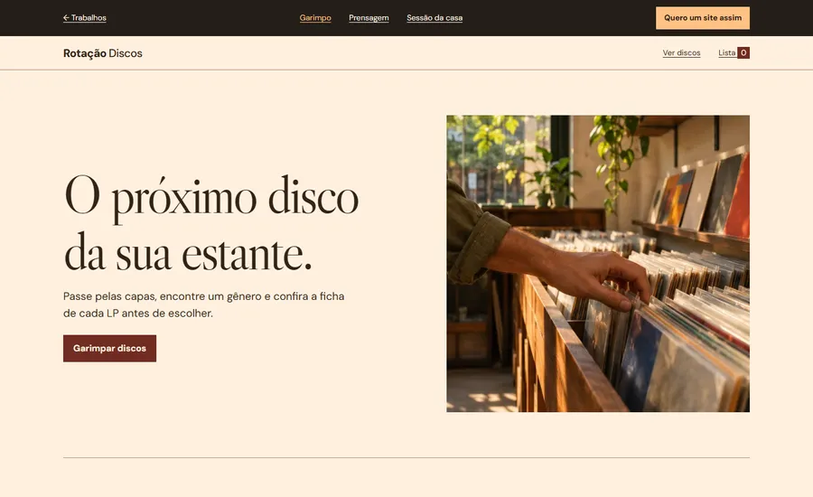
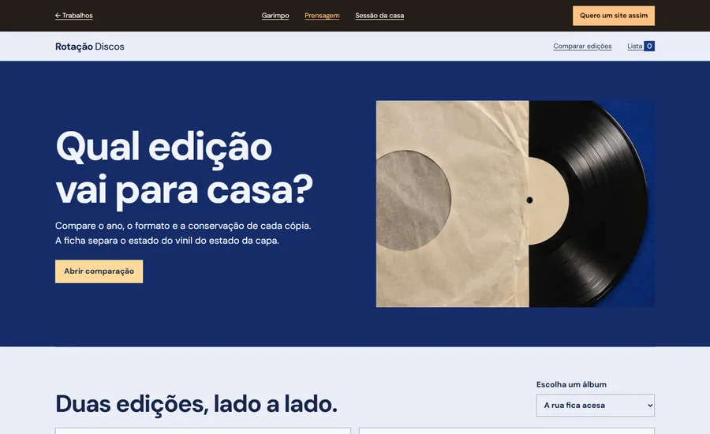
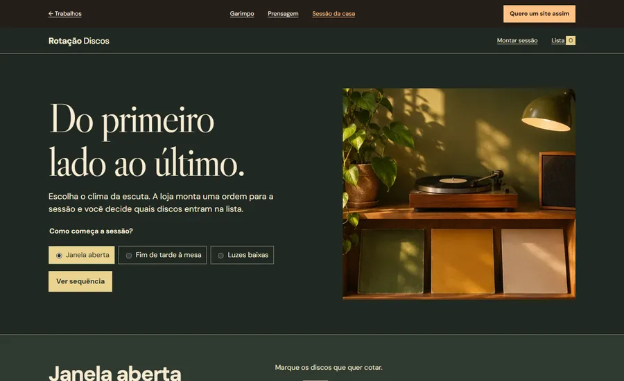

Três catálogos para uma loja de vinil. Garimpe um disco, compare prensagens ou organize a sessão.

Explore a loja por gênero e descubra as capas e fichas de cada álbum.

Compare edições e confira o estado da capa e do disco separadamente.

Monte uma sequência de discos guiada pelo clima da escuta.